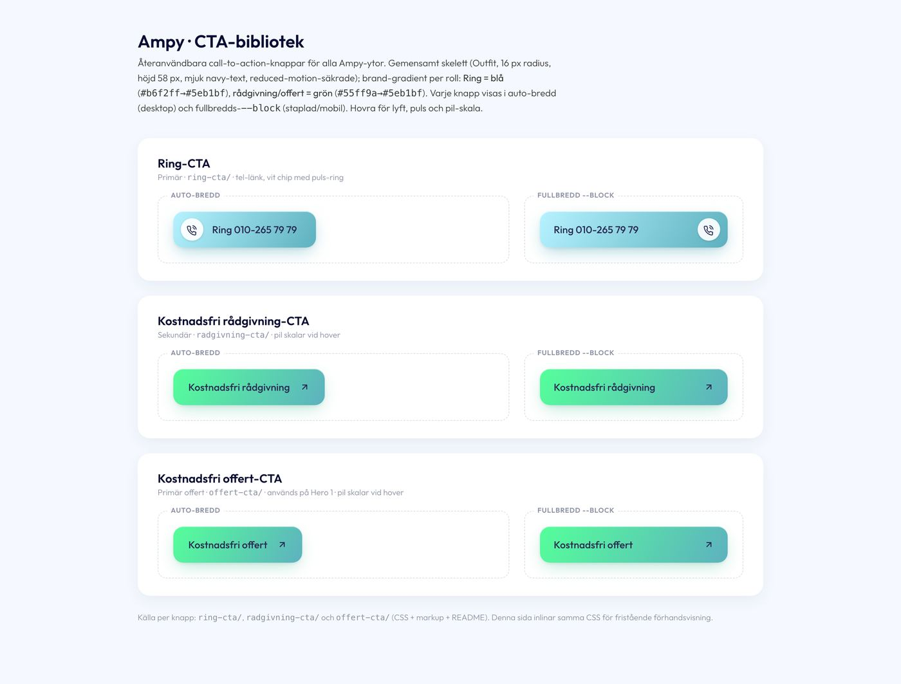

Knappar och länkar
En knappform (58 px, radie 16, Outfit 500 16), tre ytor: gradient för sidans enda konverterings-CTA, tel-ring för samtalet, solid teal-deep inne i verktyg och formulär. Ghost för det som inte ska konkurrera. Textlänkar för resten.
Kanon: cta-website (radgivning-cta/radgivning-cta.css:8-48, ring-cta/ring-cta.css:8-65, auktoritet 1). Solid: website-blocks header-CTA (Header/delivery/fluentsnippets/styles.css:66-77) med ytan teal-deep enligt beslut B5. Ghost: elcentral-kollen (assets/elcentralkollen.css:555-579). Länkar: elcentral cta-link (:607-614), hero-2 ampy-link-quiet, thank-you .ghost. Finns även i: hero-1, rot-gt, fotobedomningen, hero-2 S/G/Z/E, elkollen, elcentral, picasso, main-cta, eljour-sticky-bar (avvikelser längst ned). Blockbiblioteket: CTA-biblioteket.

Så här ser källan ut: kallor/CTA-website/index.html vid 1440. Systemets knappar nedan är klonen, bundna till tokens.
Primär: gradient-CTA
Sidans EN konverterings-CTA. Handlingsgradienten 120° neon-mint till sekundärteal, indigo-text (5,51:1), tre-lagers skugga, lyft 1,5 px och pilen skalar 1,18 vid hover. Aldrig två gradienter i samma vy (beslut B6).
Fullbredd: text vänster, ikon höger, padding 11/22. Används staplad på mobil och i kort. Naturlig bredd är standard i alla fyra hjältar (ägarorder 2026-08-06).
Tel-ring
Samtalsknappen. Blå gradient crystal-blue till sekundärteal, vit chip 36 px med lur och en lugn puls-ring var 2,8 s ("linjen är öppen"). I fullbredd byter chipen sida. Numret sätts med tabular-nums så det inte hoppar när det byts.
Solid: knappen inne i verktyg, formulär och kort
Header-CTA:ns form (48 px, 16/600, vit text, teal-glöd) men ytan är --ampy-action-strong (teal-deep, 5,27:1) i stället för teal-core (2,96:1): beslut B5. Kanon med förbehåll: knappbiblioteket saknar en sekundär, så det här är sajtens mest spridda solida knapp (header, elcentral, elkollen, LED, energycalc) samlad till en. Hover byter bara färg, ingen lyft.
Ghost: outline utan konkurrens
Elcentrals cta-primary--outline och cta-secondary: transparent, 1 px kant, bläcktext, hover teal-kant på subtil yta. Kanten är --ampy-line-strong (3,39:1) i stället för källans #e3e5ed (1,26:1, underkänd som kontrollkant). På mörkt: hero-2:s ghost (vit .10, kant .40).
Storlekar: 58 och 48
Två höjder. 58 px (biblioteket, hero-1, rail-CTA:erna) och 48 px kompakt (header, elcentral, elkollen, thank-you). Källorna hade fyra: 38, 46, 52 och 58; Picassos 38 och hero-2-forms 46 utgår. Under 480 px får .ampy-btn--block-mobile knappen att fylla raden som rail-CTA:erna gör.
Textlänkar
Fyra länkroller. .ampy-link: understruken handlingslänk i teal-deep (elcentral cta-link, 14/500, 44 px träffyta). --quiet: bläck utan understrykning, teal vid hover (hero-2, var-process). --ghost: pillformad lågemfas (thank-you "Till startsidan"). --tel: lur + nummer i tabular-nums. Teal-core är aldrig textfärg: text-teal är --ampy-action-strong.
Anatomi
Mått vid 1440 och 390, källan mot systemet. Källvärdena är CSS-värden ur kallor/ och inventeringens mätningar; systemets värden mäts i Chromium av site/_probes/s2-parity.mjs (tabellen i site/_bygglogg/S2.md).
| Egenskap | Primär (cta-website) | Tel-ring (cta-website) | Solid 48 (header) | Ghost 48 (elcentral) | Länk (elcentral cta-link) |
|---|---|---|---|---|---|
| Höjd 1440 / 390 | 58 / 58 | 58 / 58 | 48 / 48 | 48 / 48 | 44 träffyta |
| Padding | 11 / 24 (block 11 / 22) | 11 / 30 vänster 12 (block 12 / 22) | 0 / 26 | 12 (fullbredd) | 8 / 0 |
| Radie | 16 --ampy-radius-button | 16 | 16 (källan 15) | 16 (källan 10) | 6 vid fokus |
| Typografi | Outfit 500 16, lh 1 | Outfit 500 16, lh 1 | Outfit 600 16 | Outfit 500 16 (källan 600 15) | Outfit 500 14, understruken offset 3 |
| Ikon | pil 16, scale 1,18 vid hover | chip 36, lur 17, puls 2,8 s | pil 16, +3 px vid hover | 16 | 15 |
| Färg | text #282a53 på 120° #55ff9a till #5eb1bf | text #282a53 på 120° #b6f2ff till #5eb1bf | vit på #007a69 (källan #00a991, B5) | #090b32 på transparent, kant rgba(9,11,50,.48) | #007a69 |
| Skugga | inset vit .45 + 0 2 4 .06 + 0 10 26 -6 grön .45 | inset vit .55 + 0 2 4 .06 + 0 10 26 -6 blå .55 | 0 4 12 -5 teal .5 | ingen | ingen |
| Hover | lyft -1,5, saturate 1,06, skugga upp | lyft -1,5, saturate 1,08 | rgb(0,108,93) (elcentral strong-hover; headerns #008d79 mäter 4,13:1) | kant teal, bg sky-mist | bläck, 2 px understrykning |
| Fokus | 3 px --ampy-focus (navy) offset 3; neon-mint på mörkt (B14) | 2 px navy offset 3 | |||
| Rörelse | 160 ms --ampy-dur-fast; reduced-motion nollställer lyft, pil och puls | ||||
Gör och gör inte
- En gradient-CTA per yta. Solid teal-deep för alla knappar inne i verktyg, formulär och kort (B6).
- Verb i imperativ, du-tilltal, utan utropstecken: "Kostnadsfri offert", "Boka rådgivning", "Ring 010-265 79 79".
- Håll 58 px i block och hjältar, 48 px i header och inne i kort. Fullbredd bara med
--blockpå mobil eller i kort.
- Ingen egen gradient (thank-you 135°, main-form 100°, hero-2-form 282°, eljour 146°): tokenen är den enda handlingsgradienten.
- Teal-core som yta under vit text (header i dag, 2,96:1) eller som textfärg i en länk. Text-teal är teal-deep.
- Pillknappar (999), 38 px-höjd, tankstreck eller mittpunkt i etiketten, versaler, ikon som glider i sidled vid hover (pilen skalar).
Kod
Ikonerna hämtas ur spriten system/ikoner.svg (samma familj i alla exempel, 1,75 px stroke). Gradient-CTA:n är en länk till /offert/ eller /kontakt/, ringknappen en tel:-länk, formulärknappar är <button>.
<!-- Primär gradient-CTA -->
<a class="ampy-btn ampy-btn--primary" href="https://ampy.se/offert/">
Kostnadsfri offert
<svg class="ampy-btn__icon" aria-hidden="true"><use href="/system/ikoner.svg#ik-arrow-up-right"/></svg>
</a>
<!-- Tel-ring, fullbredd på mobil -->
<a class="ampy-btn ampy-btn--ring ampy-btn--block" href="tel:+46102657979">
<span class="ampy-btn__chip" aria-hidden="true"><svg><use href="/system/ikoner.svg#ik-phone"/></svg></span>
<span class="ampy-link--tel">Ring 010-265 79 79</span>
</a>
<!-- Solid (verktyg/formulär), kompakt 48, laddar -->
<button class="ampy-btn ampy-btn--secondary ampy-btn--compact is-loading" type="submit" aria-busy="true">
Boka rådgivning <span class="ampy-btn__spin" aria-hidden="true"></span>
</button>
<!-- Ghost -->
<button class="ampy-btn ampy-btn--ghost ampy-btn--compact" type="button">Fortsätt</button>
<!-- Länkar -->
<a class="ampy-link" href="/elservice/">Räkna ut din besparing</a>
<a class="ampy-link ampy-link--quiet" href="/laddboxar/">Se alla laddboxar</a>
<a class="ampy-link ampy-link--ghost" href="/">Till startsidan</a>Tillstånd i markup: disabled eller aria-disabled="true", .is-loading + aria-busy. Dokumentationens .is-hover och .is-focus speglar bara hover- och fokusstilen i exemplen.
Avvikelser i blocken
Driften ur komponentkartan. Kanon vinner; blocken listas så att de kan rättas när de rör sig.
| Block | Avvikelse mot kanon | Åtgärd |
|---|---|---|
| hero-1 (live startsida) | samma gradient-CTA men navy-skugga .40 i stället för grön glöd; 15,5/15 px text på mobil | tokenskuggan; 16 px utan mobilskalning |
| rot-gt-cro | padding 32 i stället för 24 | 24 |
| fotobedomningen | naken pil utan chip på ringknappen; kvitto-Ring i solid navy | chip 36; solid = teal-deep |
| elkollen, elcentral rail | 58 h men Outfit 400, bläck #0d0d0d, glöd rgba(241,241,241,.25), space-between; ringen 141° utan chip | 500, indigo, tokenskugga, 120° med chip |
| picasso | 38 px hög, padding --apspace-2xs | utgår, 58 är kanon |
| hero-2-form | submit 282° till #00ffda, radie 14, 46 h | tokengradient, 16, 58 |
| header (website-blocks) | solid teal-core + vit (2,96:1), radie 15, pulsprick under knappen | teal-deep (B5), 16; pulsprick är headerns egen (block.css) |
| LED, EV, energycalc, main-form, booking | solid i 50 / 56 / 52-57 / 52 pill / 48 navy; radier 12, 14, 999; PJS 600, Outfit 500 18 | 48 eller 58, radie 16, Outfit 500/600 16, teal-deep |
| eljour-block, sticky-bar, hero-2 E | nödknappen 146° #055a4b till #0a8169, radie 14 (tredje CTA-språket) | solid teal-deep; "jour öppen" bärs av statuspillen (B6) |
| booking, thank-you, main-form | sekundär 52 h radie 16 med 1,5 px kant; pillknappar 999 | ghost 48/58; en knappform (B4) |
| elcentral cta-secondary | saknar font-family, faller till Arial | Outfit via .ampy-btn |
| article-template | länkar i cobalt #326afd | teal-deep (B1) |
Tokens som saknas för knappen (rapporterat i bygglogg): höjderna 58/48, padding 11/24, gap 16 och chipens 36 px står som komponentvärden i knappar.css med källrad.